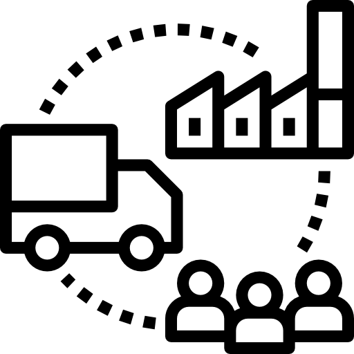
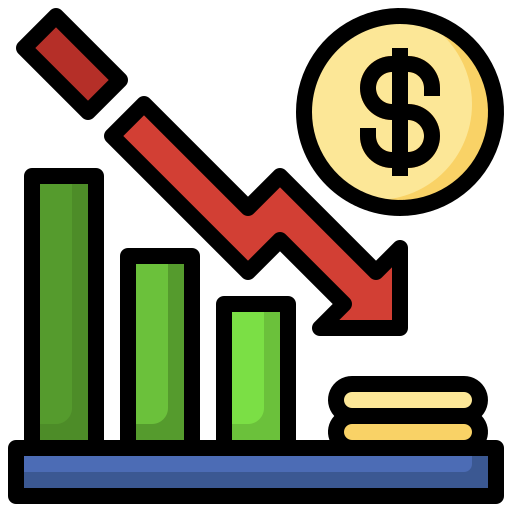

La crisis economica en las lineas de distribucion.
02/10/2022
De que va a tratar este blog?
Este blog nos introducira a la crisis actual vivida por todo el
mundo a base de una infraestructura por desarrollar y de una
serie de eventos desafortunados en las lineas de distribucion.
La bienvenida a mi vlog.

10 crisis en las lineas de distribucion.
09/10/2022
10 crisis En las lineas de distribucion.
Tormenta de nieve golpea cadenas de suministro de alimentos y
redes logísticas de Texas.
El bloqueo del Canal de Suez y su efecto en las cadenas de
suministro.
El aumento del coronavirus en la India afecta las materias primas
y la fabricación en múltiples industrias.
Los efectos de la congestión del puerto de Yantian.
Union Pacific detiene el servicio de la costa oeste a Chicago a
medida que la congestión golpea las terminales interiores.
Incendios forestales más frecuentes y severos amenazan la
creciente red logística de California.
Terminal Meishan en Ningbo pausa operaciones.
El cierre de la terminal del aeropuerto de Shanghai lleva a las
empresas de logística a esperar retrasos en la carga.
Ida interrumpe el movimiento de carga después de tocar tierra como
huracán de categoría 4.
Los efectos de los bloqueos de Vietnam en las cadenas de
suministro.
La crisis economica en las lineas de distribucion.
20/11/2022
Wall Street Journal 23/03/2022.
Linea de distribucion.
En el video que sigue se hablara de las lineas de distribucion, y su
vasta complejidad, las lineas de distribucion, en especial aquellas de
nivel internacional son de vital importancia en nuestro dia a dia,
aunque muchas veces no nos demos cuenta, estan presentes en la comida,
la gasolina, las materias primas y practicamente todo lo que conlleve
un proceso de manufacturacion a venta/retail.
Todos los días, millones de marineros, conductores de camiones,
estibadores, trabajadores de almacenes y conductores de entrega
mantienen montañas de productos en movimiento en tiendas y hogares
para satisfacer las crecientes expectativas de conveniencia de los
consumidores. Pero este complejo movimiento de bienes que sustenta la
economía global es mucho más vulnerable de lo que muchos imaginaban.
Ilustración fotográfica: Adele Morgan
Texto de descripción de mi ilustración.
Investigación.
21/11/2022
La crisis del transporte marítimo
A más de 18 meses de la pandemia, la interrupción de
las cadenas de suministro globales está empeorando, lo que provoca una
escasez de productos de consumo y hace que sea más costoso para las
empresas enviar bienes a donde se necesitan.
Las presiones sobre las cadenas de suministro globales no han
disminuido y no esperamos que lo hagan pronto
33%
Crisis petrolera en europa debido a la guerra Rusia-Ucrania
El conflicto armado entre Rusia y Ucrania ha
desbalanceado los mercados internacionales e
impactado en el precio de los hidrocarburos, lo que ha provocado un
aumento en los precios, especialmente en los productos petrolíferos,
como lo son las gasolinas.
Conforme pasan más días de la invasión de Rusia en Ucrania, crece
la inestabilidad de la economía mundial.
66%
Escasez de alimentos en Europa
Debido al conflicto armado de la guerra Rusia-Ucrania, materias primas
provenientes de Rusia son restringidas a ser distribuidas en Europa,
ocasionando una escasez de alimentos, en especial en el trigo y aceite
de girasol. Se piensa que esto podría llevar a una recesión de
alimentos a nivel mundial.
Los alimentos han pasado a formar parte del arsenal de terror del
Kremlin y no podemos tolerarlo
100%Texto de descripción de mi ilustración.
Ejemplo de subtítulo
Ejemplo de contenido
Texto de descripción de mi ilustración.
¿A que se debe la crisis en las líneas de distribución?